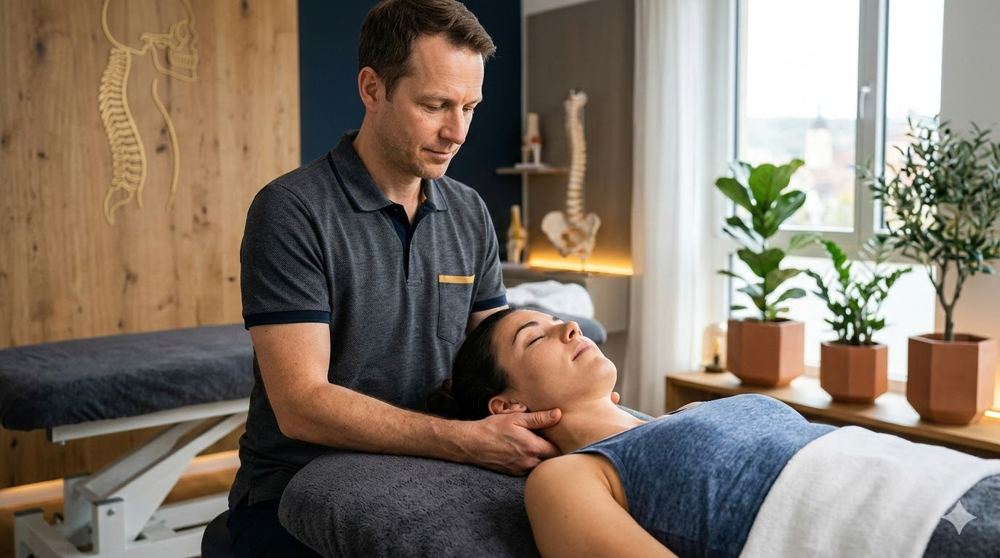
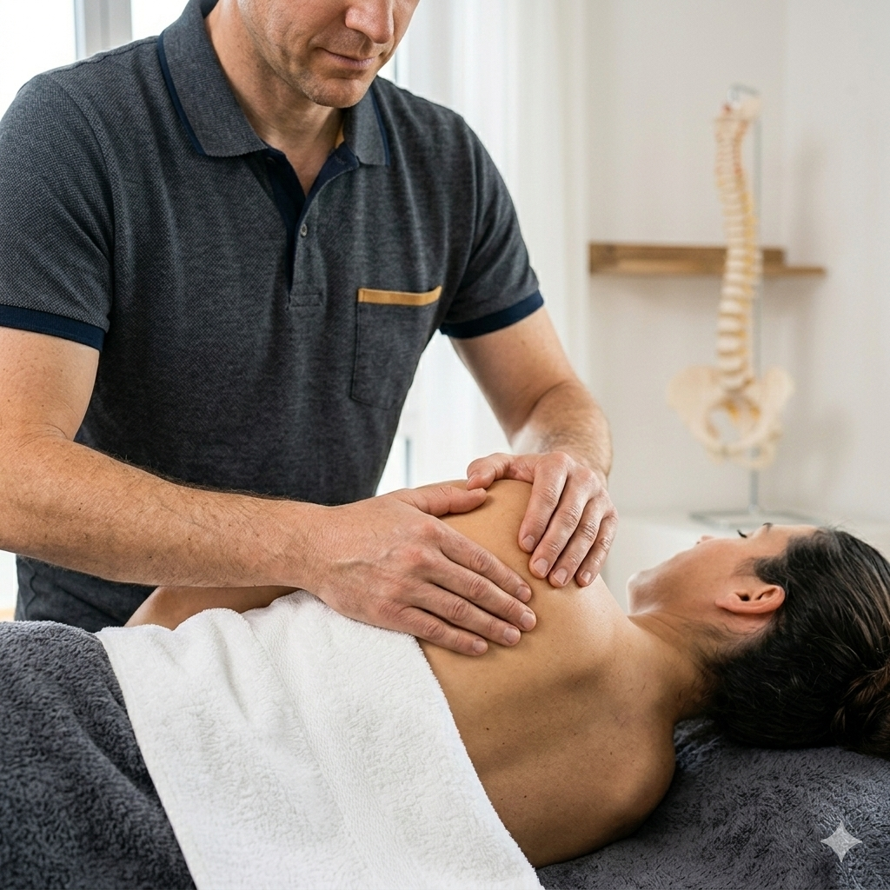
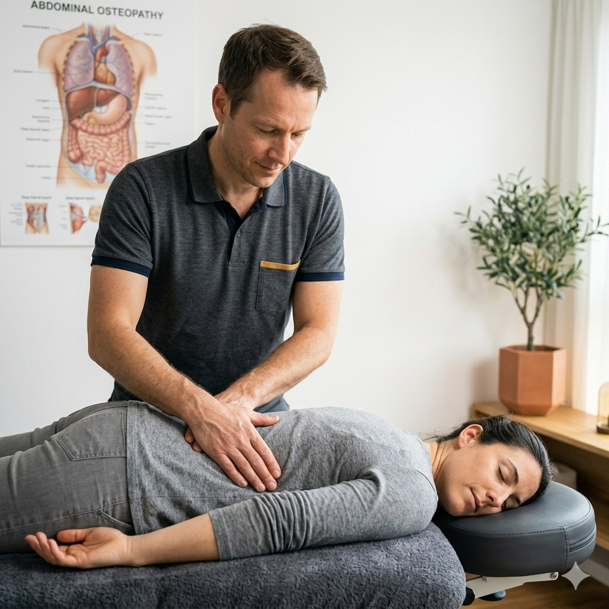
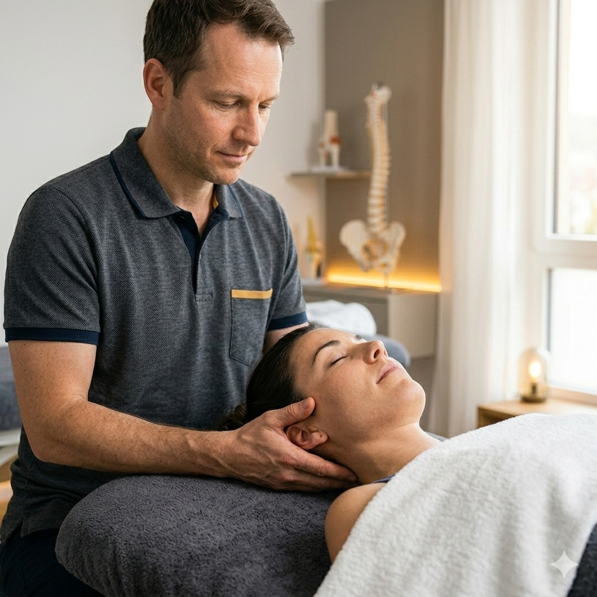

Bewegung ist Leben.
Erleben Sie eine Therapie, die nicht nur Symptome behandelt, sondern die Ursachen Ihrer Beschwerden tiefgreifend versteht.
Termin vereinbaren
Spezialisierungen

Strukturell
Präzise Arbeit an Wirbelsäule und Gelenken zur Wiederherstellung Ihrer Mobilität.

Organisch
Viszeral-therapeutische Ansätze zur Unterstützung der inneren Vitalfunktionen.

Neurologisch
Sanfte Techniken zur Entspannung des Nervensystems und Regulation von Stress.